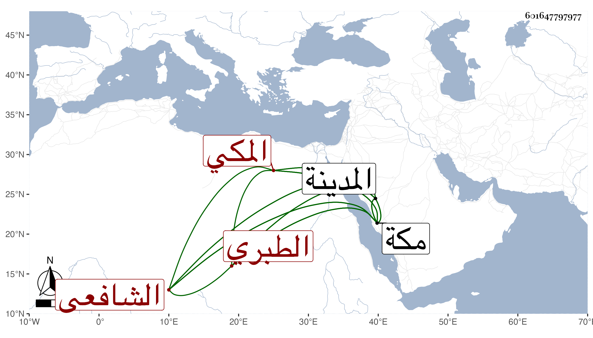

0902Sakhawi.DawLamic.ITO20230111-ara1.EIS1600.601647797977
Biography ID: 601647797977
96
محمد بن أحمد بن محمد بن أحمد بن عبد الله بن محمد بن أبي بكر بن محمد ابن إبراهيم الزين أبو الخير بن الزين أبي الطاهر بن الجمال أبي المفاخر بن الحافظ المحب أبي جعفر الطبري الأصل المكي الشافعي وأمه أم كلثوم ابنة أبي عبد الله محمد بن علي بن يحيى بن علي الغرناطي . ولد في جمادى الأولى سنة تسع وثلاثين وسبعمائة بالمدينة النبوية وسمع بمكة من السراج الدمنهوري والفخر عثمان بن يوسف النويري والعز بن جماعة والشهاب الهكارى والعفيف المطري وجماعة وأجاز له الشهاب أحمد بن علي الجزري وابن القماح وابن كشتغدي وابن غالي والمشتولى والأسعردي والبدر الفارقي وأبو حيان والمزي وحفيد ابن عبد الدائم وابن عبد الهادي وخلق ، وتلا بالسبع علي المقرىء ناصر الدين العقيلي وأبي عبد الله محمد بن سليمان الحكرى وأذنا له وحفظ كتبا في فنون وحضر مجالس القاضي أبي الفضل النويري بل اختص به حتى كان يقرأ عليه صحيح البخاري في غالب السنين واستقر به أمينا على أموال الأيتام واستنابه في الأنكحة وكذا ناب عن غيره أيضا وربما حكم في بعض القضايا وأعاد ببعض مدارس مكة ، وحدث بالإجازة بالكثير سمع عليه التقي بن فهد وذكره في معجمه وكذا الأبي في سنة اثنتي عشرة ، وكانت له نباهة في العلم ومروءة طائلة تؤدي إلى ضيق . ومات في رمضان سنة خمس عشرة ، ذكره التقي الفاسي مطولا وشيخنا في أنبائه باختصار وسقط من نسختي أحمد الثاني في نسبه . وقال إنه تفرد بإجازة الجزري بمكة وبرع في العلم وكذا أوردته في تاريخ المدينة ، وهو في عقود المقريزي رحمه الله .
